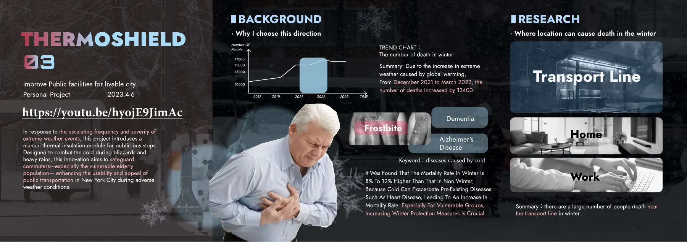
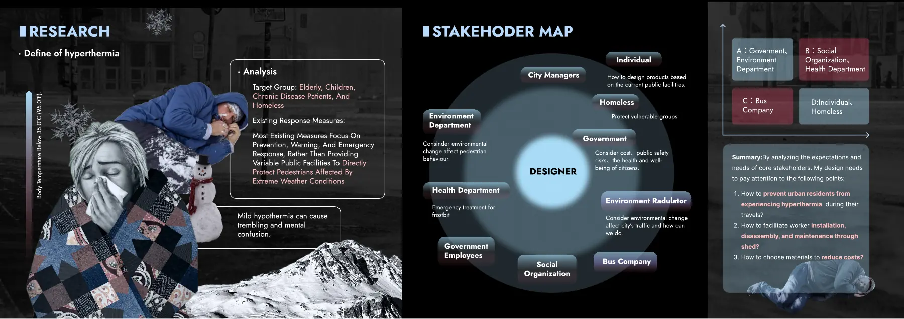
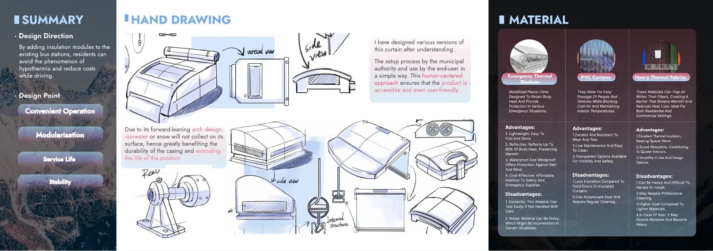
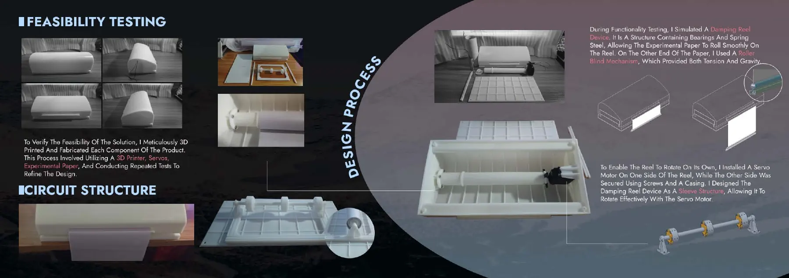

Brief
Extreme cold is hardest on people waiting outside for public transit, including older riders and people with chronic illness. The project looked at adding a quick, manual insulation module to existing bus stops in New York City.
Research and process
- Mapped stakeholders, from city agencies and the bus company to riders and homeless people, and what each would need from the design.
- Compared emergency thermal blankets, PVC curtains and heavy insulating fabric on durability, cost and ease of use.
- Sketched the housing and the pull-down mechanism, and drew an exploded view.
- 3D-printed the parts and built a model to test the pull-down and roll-back mechanism.
Outcome
A concept with a mechanical feasibility model. It hasn't been installed or tested for how warm it keeps people.
Portfolio pages







